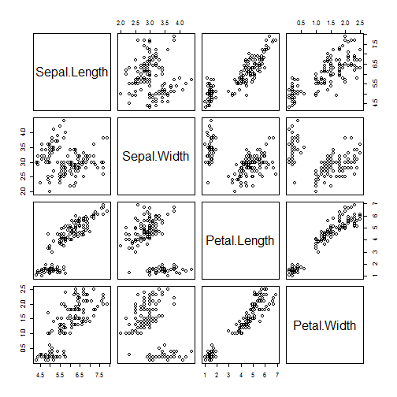
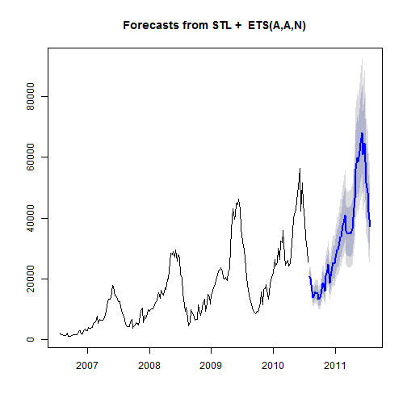
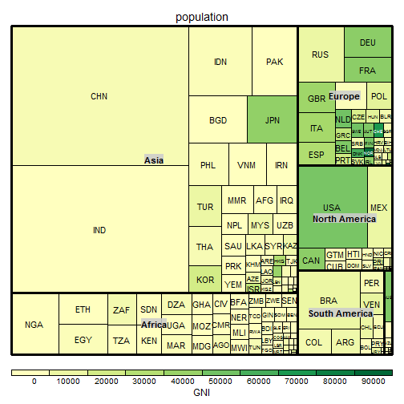
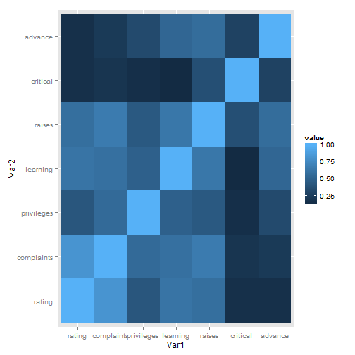

- A statistical programming language.
- Most importantly, it is:
- Free!
- Open Source
- Under Constant Development
The Joys of Data Visualisation Using R
Ewan Keith
What is R?
Why Use R?
- It is desgined with statistics and statisticians in mind
- Provides a single platform for analysis and visualisation
- Massive range of visualisation options
- On the cutting edge/constantly updated
- Range of dissemination options
- Shiny
Designed For Statistics
- Basic plots are very easy to produce
- also easily altered quickly
- Well suited to fast, exploratory visualisation
Basic Plots are easy
plot(iris$Petal.Length, iris$Petal.Width)

Brief aside on Flower data
Basic Plots are easy
hist(x)

Plots easily altered
x2 <- x[x < 10]
hist(x2)

Plots easily altered
hist(log(x))

Common Statistical Tasks Are Easily Handled
Basic Statistical tasks are considered and easy to carry out.
- which they may not be in other programming languages.
Major reason to consider R over alternatives like Python or Matlab.
Similar to SAS in this regard.
Common Statistical Tasks Are Easily Handled
plot(iris$Petal.Length, iris$Petal.Width)

Common Statistical Tasks Are Easily Handled
xyplot(Petal.Width ~ Petal.Length | Species,data = iris)

Common Statistical Tasks Are Easily Handled
pairs(iris[,1:4])

Common Statistical Tasks Are Easily Handled
- Model Checking can be time consuming given the number of assumptions that need checked

Common Statistical Tasks Are Easily Handled
plot(regression_model)

Publication Quality Plots are Easy
- Once a basic plot has been decided on it is easy to produce high quality versions for publication.
- Highly customisable and available in a range of formats.
Publication Quality Plots are Easy

Publication Quality Plots are Easy

Designed for Statistics
- All of the above can be done by any most other programming languages
- But not as easily, as neatly, or as quickly
An Integrated Analysis & Visualisation Platform
- Allows you to easily move from analysis to visualisation.
- Keeps the workflow clean and can be stored in a single file.
- Allows for easy visualisation of complex analyses/models.
- Easy to replicate/extend plots for new data
An Integrated Analysis & Visualisation Platform

An Integrated Analysis & Visualisation Platform
## This is lavaan 0.5-20
## lavaan is BETA software! Please report any bugs.

An Integrated Analysis & Visualisation Platform

Massive Range of Visualisation Options
- 'Basic' Visualisations extremely well integrated
- But much greater flexibility is offered than in most other software packages
- Wide range of domain specific visualisation supported also (e.g. GIS)
'Basic' Charts

'Basic' Charts

'Basic' Charts

Specific Subject Areas
- R also has very strong capabilities in topic specific areas of visualisation
- e.g. Geographical Information Systems (GIS)
- Again R excels here as a single analysis/visualisation environment.
GIS Capabilities

GIS Capabilities

GIS Capabilities
- Commute Example
On Cutting Edge
- Constantly developed so new technology often encorporated
- Has powerful support to the D3 Javascript plotting library
- Google motion plots easily handled (if DII allowed Flash.)
Ever increasing number of options for interactive plotting (plot.ly went open source in November for example)
But just because this exists doesn't mean it always plays well with other packages. This includes slides...
Range of Dissemination Options
- Not Limited to 'copy and pasting' images into word documents
- R can be used to produce, fully functional:
- Word Documents
- Web Pages
- PDF Documents
- and slide shows!
Examples of Dissemination
- DEA Supplementary Web Page
- Treemap Documentation
- These slides
- Automatically updating report
R Shiny
- Tool for producing interactive data applications
- Extremely Powerful and Versatile
- Can be hosted on a web server
- Only requires knowledge of R code
- Also completely Free
So What?
- R is currently available on the VM
- Introductory training in R is currently being organised by the department
- Working group set up recently to iron out any difficulties using R in MOD and look into extending functionality.